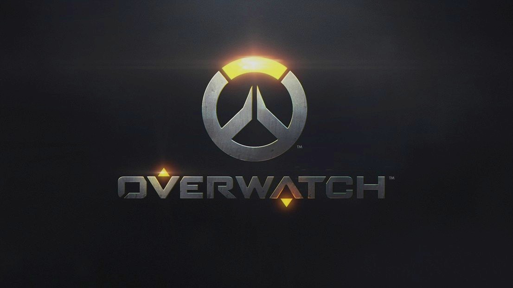

- Year: 2016
- Genre: FPS, Multiplayer
- Developer: Blizzard Entertainment
- Platforms: PC, PlayStation 4, Xbox One
- Awards: Game of the Year (GOTY) 2016
About the Game
Overwatch is a team-based first-person shooter developed by Blizzard Entertainment. It introduced the world to a diverse cast of characters, each with unique abilities and playstyles, in fast-paced, objective-based battles.
Key Features
- Hero-Based Gameplay: Choose from a roster of unique heroes, each with distinct abilities and roles.
- Team-Based Objectives: Work together to complete objectives like capturing points or escorting payloads.
- Dynamic Maps: Battle across a variety of maps designed for different game modes.
- Regular Updates: Frequent updates and new heroes keep the game fresh and engaging.
- Cultural Impact: Overwatch became a cultural phenomenon, inspiring fan art, cosplay, and esports.
Why It Won GOTY 2016
- Innovative Gameplay: Overwatch redefined the team-based shooter genre with its hero-based mechanics.
- Diverse Characters: The game's diverse cast of heroes resonated with players worldwide.
- Esports Success: Overwatch quickly became a major player in the esports scene.
- Community Engagement: Blizzard's commitment to community feedback and updates was praised.
- Visual and Audio Design: The game's vibrant art style and memorable sound design set it apart.